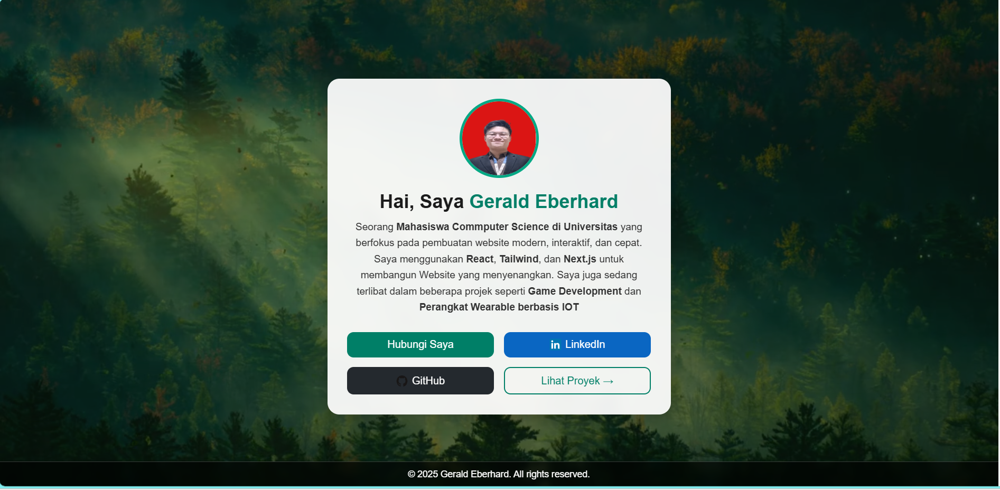

📁 Proyek Saya
Beberapa proyek yang pernah saya kerjakan dan banggakan.

Website Portofolio Pribadi
Website responsif yang menampilkan profil dan karya saya menggunakan HTML dan CSS. Pada saat saya membuat website ini adalah untuk memenuhi tugas Praktikum Pemograman Web saya. Pada saat itu ketentuannya hanya untuk menggunakan HTML dan CSS

Cofi Xyntra
Teknologi AI berbasis web untuk mempermudah proses transfers, swaps, staking, dan lain sebagainya dalam dunia crypto currency. Visi kami adalah ingin menyederhanakan proses transaksi dengan mengimplementasikan AI sehingga kedepannya apa bila ingin melakukan transaksi cukup dilakukan dengan perintah suara saja. Kemudian AI akan memproses semuanya untuk anda. Project ini berasal dari perlombaan hackathon yang diadakan oleh ICP Hub yaitu WCHL 2025. Pada perlombaan ini kami berkesempatan memasuki tahap regional dan kami gugur pada seleksi untuk tahap nasional. Pada project ini saya memang tidak terlibat langsung dalam proses pembuatan codingannya. Namun ini merupakan salah satu project yang saya banggakan karena pada kesempatan ini saya bisa berkolaborasi dengan 2 orang profesional dari Indonesia di bidang IT dan 2 orang profesional programmer dari Bolivia Amerika Selatan.

Pengalaman Perlombaan
Ada dua project yang saat ini sedang saya coba kembangkan dan sedang saya lombakan dua project itu adalah AIRA yang merupakan Inovasi di Bidang IOT. AIRA (Anti-Bullying Intelligent Recorder Assistant) adalah Gelang Pintar untuk Pengawasan dan Pencegahan Perundungan dengan Memanfaatkan Embedded System. AIRA ini sempat kami lombakan pada Samsung SFT 2025 namun gugur pada tahap penjurian untuk implementasi AI, Kami juga sempat lombakan di PKM 2025 dan Gemastik 2025 namun kalah juga, Terakhir kami berhasil lolos di UPPC 2025 yang merupakan lomba yang diadakan oleh Universitas Pertamina. Kemudian ada juga project Game Development kami yaitu Archipelago: The Legacy of The Anchestors. Di dalam project ini saya dan tim ingin membangun game 3A seperti Assasin Creedd atau Game RPG seperti Genshin Impact, Kami mendaftar ke perlombaan UPERCASE IB 2025 dengan nama Tim Warisan Nusantara, kami terus belajar dan menghadapi dan menyelesaikan satu persatu tantangan yang datang. Pada perlombaan ini tim kami harus kalah pada tahap penilaian pitching yang ke 2. Project Archipelago juga sempat kami lombakan di Gemastik 2025 namun kalah juga. Kedua project ini masih dalam tahapan pengembangan dan belum benar-benar selesai tapi kalo saya dibolehkan memilih, project Cofi-Xyntra, AIRA, dan Archipelago adalah project yang benar-benar saya banggakan dan memberikan saya banyak kesempatan untuk belajar mulai dari leadership, kolaborasi, ketekunan, dan kegigihan.